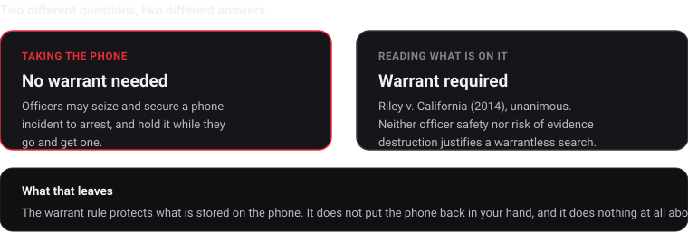

Questions people actually ask me about recording police
What the courts have held, and where it is still a mess.
I am a developer, not a lawyer, and I want to be blunt about that before you read any further. What follows is what I found while building this and checking my own assumptions, with sources so you can go read them yourself. Where the law is unsettled I have said so instead of rounding it off into something reassuring.
This is not legal advice and I am not qualified to give it. If you need advice about your situation, the National Lawyers Guild runs a legal support line, and the ACLU affiliate in your state publishes know-your-rights material written by actual attorneys. Use those.
Is it actually legal to film the police?
In the United States, yes, in public, if you are not physically interfering. This is more settled than most people assume.
Every federal circuit court that has squarely taken up the question has found a First Amendment right to record officers doing their jobs in public. The First, Third, Fourth, Fifth, Seventh, Ninth, Tenth and Eleventh Circuits all got there, and the Second Circuit joined them in August 2026, in a case about a Connecticut man filming a police station from a public sidewalk.
What that does not mean is that you cannot be arrested. Courts grant officers qualified immunity fairly often even while affirming the right, which is exactly what happened in that Second Circuit case. So "I am within my rights" and "I will not be handcuffed tonight" are separate questions, and only one of them is settled.
Can they order me to stop?
They can order it. Whether the order is lawful is a different matter, and that distinction gets argued afterwards, in a building, with a lawyer, not on the street at the time.
The consistent thread in the case law is interference. Filming is protected; obstructing is not. Which means the practical risk is almost never the camera itself. It is proximity, refusing to step back, and everything else happening around you.
How far back do I need to be?
There is no national number, and anyone who gives you one is guessing.
Several states passed buffer-zone laws setting a fixed minimum distance. Arizona's set eight feet, and it is the most instructive one, because Arizona then stipulated in federal court that criminalising recording within eight feet violates a clearly established First Amendment right. Other states have tried similar laws with similar challenges pending.
Rapid response and legal observer guidance commonly suggests around ten feet as a working default. Not because ten is legally magic, but because it is far enough to be visibly not interfering, and close enough for the footage to be worth anything.
Can they take my phone?
They can seize it. Searching it is a different question with a much clearer answer.
Riley v. California (2014) was unanimous: police generally need a warrant to search the digital contents of a phone, even one seized during an arrest. The Court specifically rejected the arguments that officer safety or the risk of evidence destruction justified a warrantless search.
But it left seizure intact. Officers can take the device and secure it while they go get a warrant. So the phone can be gone from your hands entirely lawfully, and the footage on it goes with it, for days or longer.
This is the gap I actually built for. The legal protection covers the contents of the phone. It does not put the phone back in your hand, and it does nothing at all about a phone that gets dropped, smashed, or wiped.

Can they delete my video?
No, and there are officers who have been criminally charged for it. A Philadelphia officer was charged with evidence tampering, obstruction and official oppression after appearing on video deleting footage from someone's phone during an arrest.
That is the right outcome and it is close to useless to you in the moment. The charge lands months later. The footage is already gone. A rule that is enforced retroactively is not a safeguard, it is a remedy, and those are different things.
Which is the whole argument for getting a copy off the device while you are still filming rather than afterwards.
Seizure, search, deletion and compelled unlocking are four separate questions and they get run together constantly. I have pulled them apart, with what to say in each case, on the page about whether police can take your phone or delete your video.
Do I have to say I am recording?
This one is genuinely inconsistent and I am not going to flatten it.
Federal law and most states are one-party consent, meaning you can record a conversation you are part of. A minority of states require all-party consent. Those statutes are generally written around private conversations, and courts have frequently declined to apply them to on-duty officers acting in public, on the reasoning that there is no reasonable expectation of privacy there. Frequently is not always, and the details differ by state.
Video without audio sits on much simpler ground almost everywhere.
Practically, and separate from any legal question: saying out loud that you are recording, when it is safe to, tends to change behaviour on both sides. Many people who do this for a living recommend it for that reason rather than a legal one.
Will the video actually hold up?
Here is the part that surprised me most when I started looking into it, and the reason the app does what it does.
The challenge to footage is increasingly not "that did not happen." It is "that video has been edited." And a plain video file is remarkably weak against that. File timestamps can be changed trivially. Editing software is good and cheap. Generated video is now good enough that courts are actively worrying about it.
What answers that is a chain of custody: a cryptographic hash of the file computed before it moves anywhere, and independent proof of when it existed. That is why every piece gets SHA-256 hashed on the device and the manifest gets counter-signed by an outside timestamp authority. Anyone can run the check themselves with OpenSSL, no app and no trust in me required.
One thing that catches people constantly: sending footage through a messaging app or posting it to social media re-compresses the file. That changes the bytes, which breaks the hash match. Keep the originals untouched and share copies.
What about ICE and immigration enforcement?
Same First Amendment analysis, different practical picture, and enough of a topic on its own that I gave it its own page with the relevant organisations linked.
Things I could not give you a clean answer on
Being straight about the edges, since everything above sounds tidier than the reality:
- Outside the United States the picture is completely different and I have not researched it properly. Do not read any of this as applying to you if you are not in the US.
- Buffer-zone laws are actively in flux. Several are being litigated right now and anything I write will age badly.
- Private property changes the analysis substantially, and "public place" is doing a lot of work in every sentence above.
- Whether specific footage is admissible in a specific case turns on jurisdiction, procedure and facts. Chain of custody removes one common objection. It does not make anything automatically admissible.
Sources worth reading directly
- EFF, Want to Record The Cops? Know Your Rights
- ACLU, guidance for photographers and protesters' rights
- National Lawyers Guild Legal Observer program
- Freedom Forum, Recording Law Enforcement
Written August 2026. Law changes, and this page will not always keep up. Nothing here is legal advice.